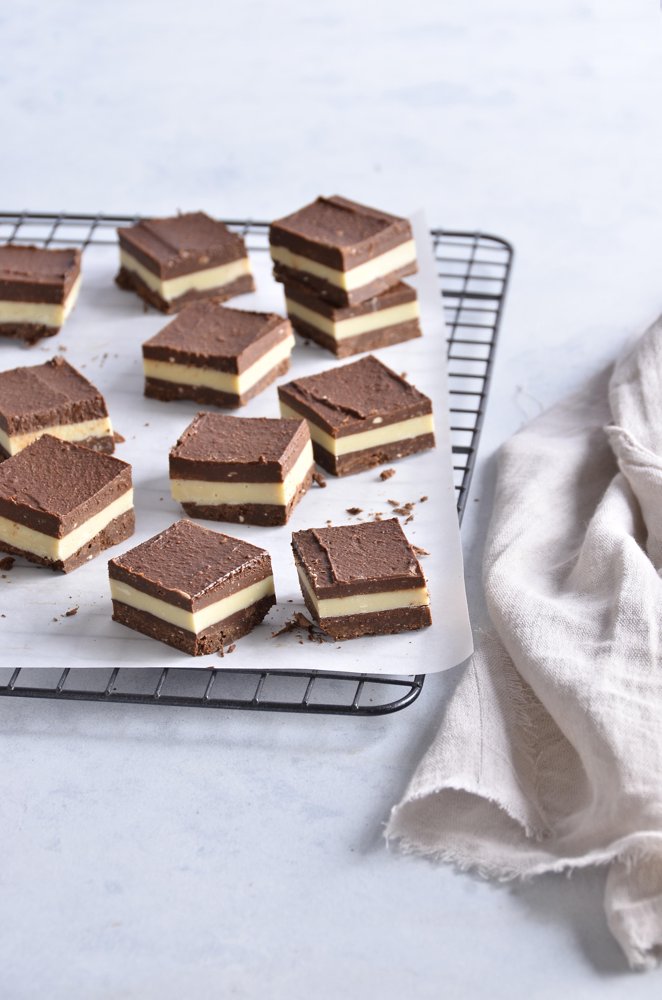

Ingredientes Puros
Selecionamos farinhas especiais, manteiga de verdade e chocolates de origem. Sem conservantes artificiais.
Tudo começou com uma receita de família e o desejo de tornar a época mais especial do ano ainda mais doce e inesquecível.
A Maison Noël nasceu em uma pequena cozinha, movida pela paixão de criar doces que não apenas alimentam, mas que contam histórias. Acreditamos que o Natal é feito de partilha, e cada panetone que sai dos nossos fornos carrega um pedacinho desse sentimento.
Ao longo dos anos, crescemos, mas nossa filosofia permanece intacta: respeito ao tempo dos ingredientes, fermentação natural longa e produção 100% artesanal, sem atalhos.

Selecionamos farinhas especiais, manteiga de verdade e chocolates de origem. Sem conservantes artificiais.
Nossas massas descansam por até 48 horas, garantindo uma textura macia, úmida e de fácil digestão.
Do primeiro misturar de ingredientes até o laço da fita na embalagem final, tudo tem o toque humano.